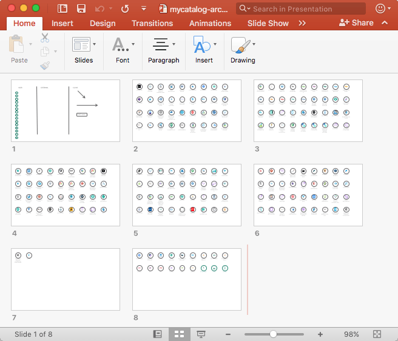
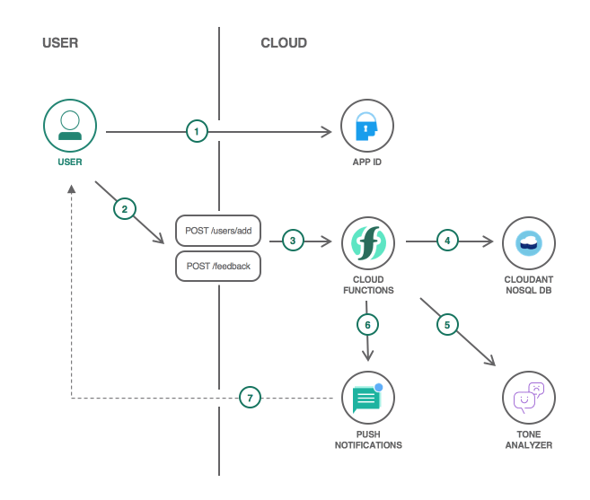

my architecture
Source Code
My Catalog
 
a template for
architecture diagram
inspired by the
Cloud patterns
Download for Powerpoint
This template is automatically generated from the list of services found in mycatalog.
made by
fred